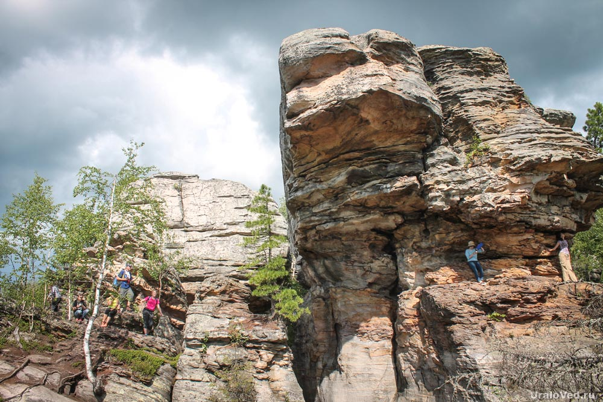

← Назад к категории На главную

Природная достопримечательность · Губахинский округ
Об этом месте
Каменный город — необычный скальный массив из песчаника. Ветер, вода и перепады температуры постепенно разрушали горную породу, создавая узкие проходы, каменные коридоры и отдельные скалы. Из-за сходства с улицами и зданиями место получило своё название.
Интересные факты
- Формы рельефа возникли в результате выветривания.
- Среди скал есть образования с народными названиями.
- Это одна из самых известных природных достопримечательностей края.